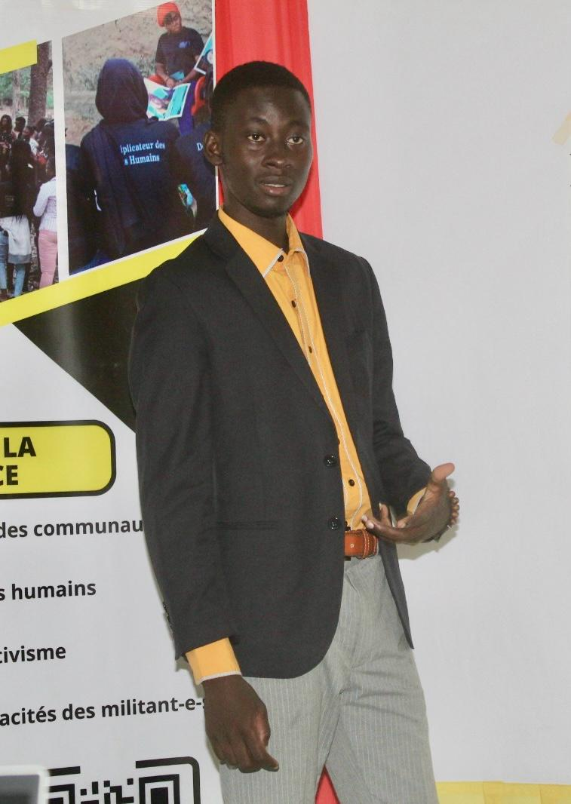
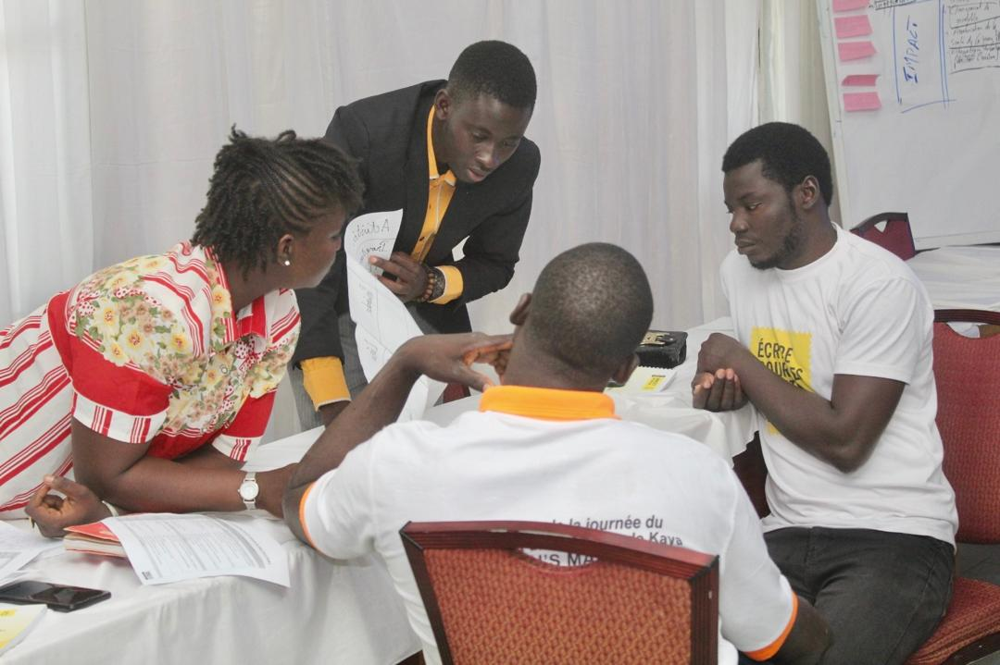
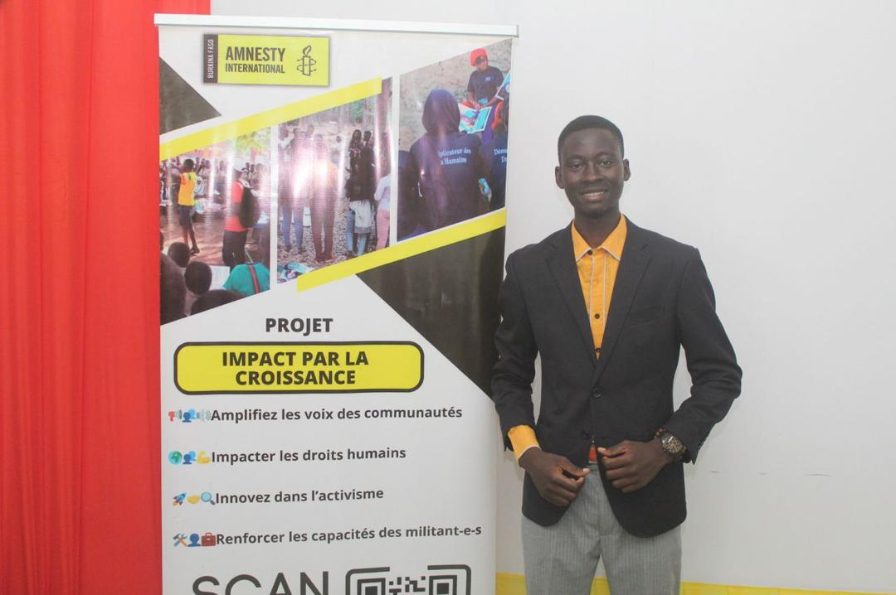
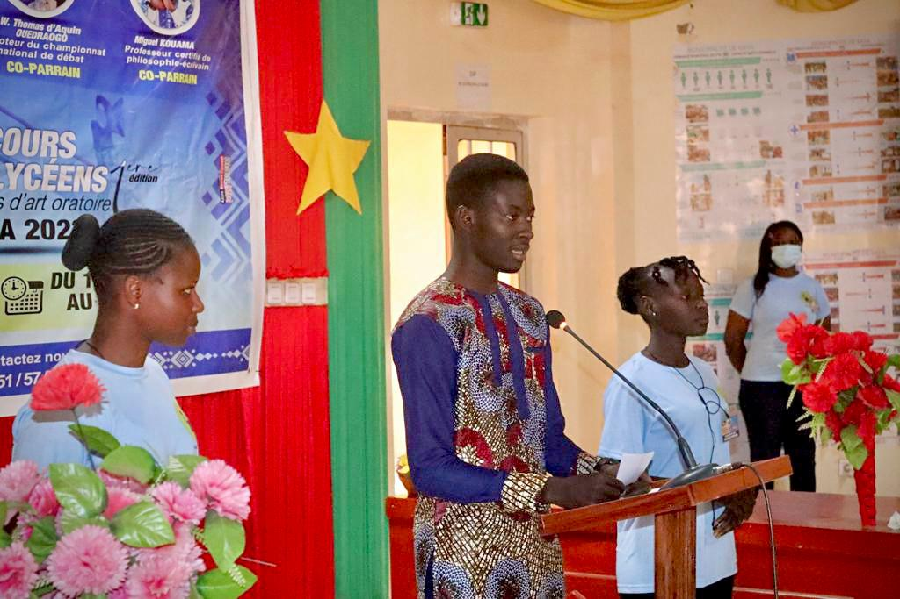
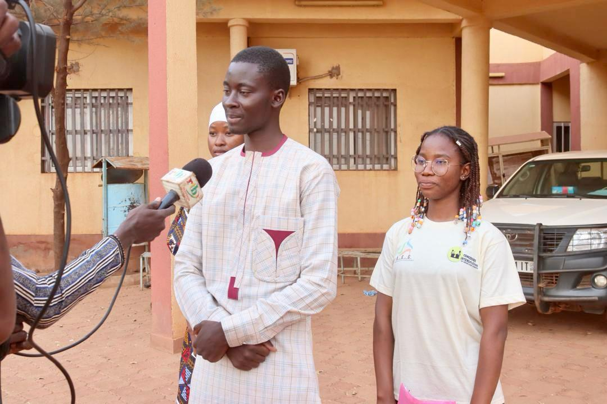
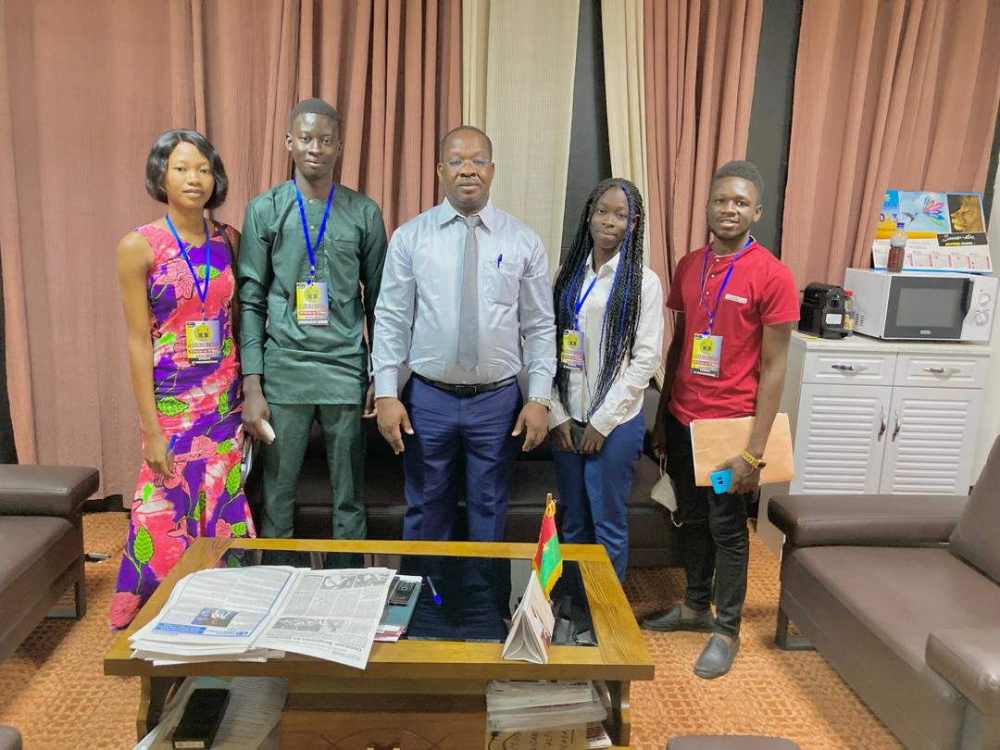
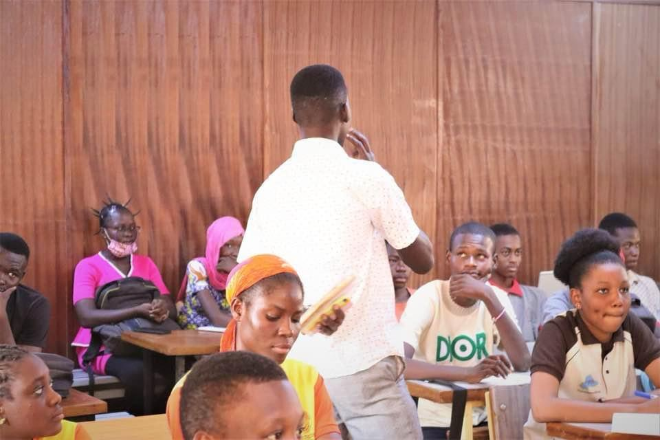
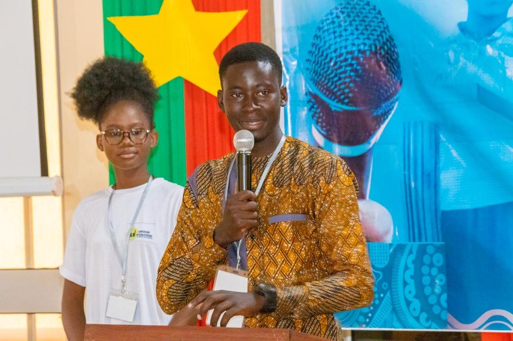
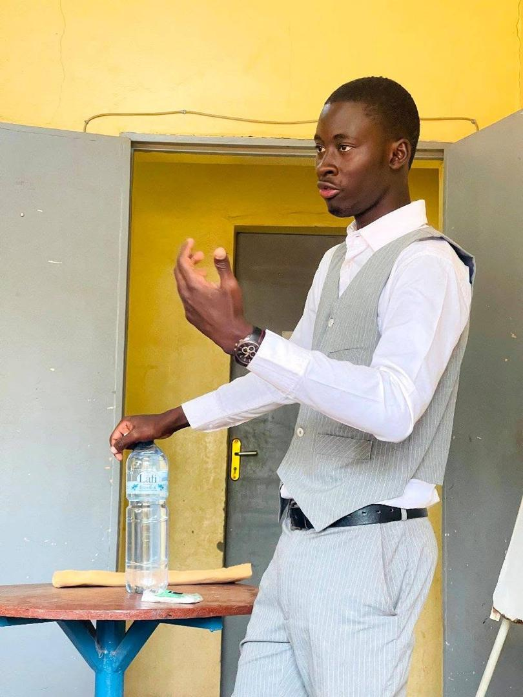

Research & Projects
Master's thesis research: Green fiscality and innovation in an endogenous growth model with agency problems

This theoretical project focuses on the effects of environmental regulation such as environmental taxes on innovation. The objective is to understand how environmental regulation may influence innovation through contractual relations between managers and shareholders. The project also proposes policy insights related to green growth strategies.
See more- Role: Author
- Institution: UBE
- Period: 2025 – 2026
Professional Bachelor's degree research: Sensitivity of growth to budgetary policies – the case of Burkina Faso
This project estimates the effects of taxes and public spending on GDP per capita in Burkina Faso. Using time series data from the World Bank and an ARDL econometric model, the research evaluates the long-run and short-run relationships between fiscal policy and economic growth.
See more- Role: Researcher
- Institution: UJKZ
- Period: 2023 – 2024
Knowledge Sharing
Extra-academic activities



Citizen activism
I participated in community volunteering programs with Amnesty International Burkina Faso, focused on sensitizing people on human rights. The goal was to help people and promote human rights among young people.
See more


Youth association Leader
Citizen engagement is the best way to train yourself, while being useful to your community. The associative environment is its most concrete manifestation. I have always been interested in taking actions whose impact goes beyond one's own person, and I demonstrated this by getting involved in several associations, before co-founding one with other young people. Within the AEC, we have worked for entrepreneurship, green finance and good communication, through competitio
See more


Public speech
Passionate about public speaking, I have practiced the discipline since high school. From passionate debater to trainer in the art of debate and pitching, through organizing a debate competition and offering services as a master of ceremonies, the art of speaking has been my second main activity during my undergraduate studies. I am still happy to practice it!.
See more